GitHub Pages · 静态网站 · 自定义域名
GitHub Pages 免费建站教程：6分钟部署网站＋绑定自己的域名（小白也能学会）
想免费部署自己的网站，又不想购买服务器？本期用 GitHub Pages 演示如何从零上线静态网站， 并通过 Cloudflare 绑定自己的域名。适合个人主页、博客、产品介绍页和文档网站； 需要后台或数据库的网站不适用。
在 YouTube 观看本期视频开始前要准备什么
- 一个可以正常登录的 GitHub 账户。
- 已经制作完成的静态网站文件，并确保入口文件名为
index.html。 - 如果要绑定自己的域名，需要拥有一个域名，并能修改它的 DNS 记录。
- 视频使用 Cloudflare 管理域名 DNS；使用其他 DNS 服务商时，字段含义相同，界面会不同。
- 准备一个现代浏览器，用于本地预览、配置 GitHub 和检查最终网站。
先确认网站是否适合 GitHub Pages
视频开头先说明了使用边界：这套免费部署方式适合体量较小的静态网站，例如个人博客、 产品介绍页和文档。如果网站依赖大量后端逻辑、需要在服务器运行程序或连接数据库， 就不能直接照这套方法部署。
GitHub Pages 会把仓库中的静态文件发布到一个公开网址。浏览器请求页面时， GitHub 只负责返回这些已经准备好的文件，不会替你运行 PHP、Python 或其他后端代码。
检查网站文件和首页
-
找到完整的网站文件夹
打开资源管理器，找到准备发布的网站。不要只上传某一个 HTML 文件： 如果页面还使用 CSS、JavaScript、图片或字体，也要保留原来的目录结构一起上传。
一个常见的静态网站目录大致如下：
index.html assets/ ├── css/ │ └── style.css ├── js/ │ └── main.js └── images/ └── avatar.jpg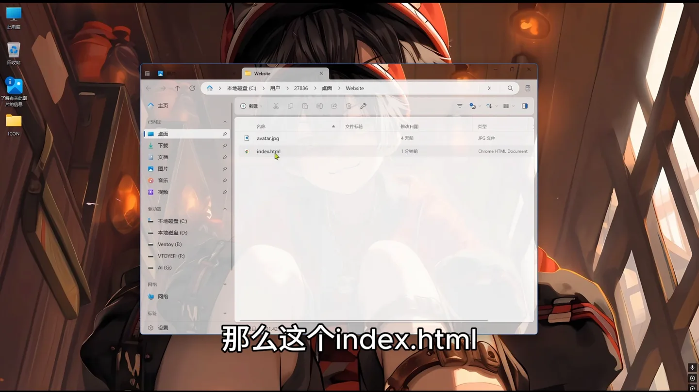
视频示例网站的入口文件是 index.html。 -
确认入口文件叫 index.html
GitHub Pages 会在发布目录顶层寻找入口文件。视频使用
index.html，因此它必须直接位于准备发布的根目录， 不能藏在另一层无关文件夹中。 -
在浏览器中进行本地预览
双击
index.html，或者右键选择浏览器打开。 检查页面文字、图片和按钮是否正常。如果本地就缺图或样式错乱， 上传后通常也不会自动恢复。确认首页能打开后，再开始上传。
在 GitHub 创建一个新仓库
-
登录 GitHub
打开 github.com， 登录自己的账户。后续仓库、Pages 地址和自定义域名都属于这个账户。
-
点击右上角加号
在 GitHub 页面右上角点击 ＋， 然后选择 New repository。
New repository 用于新建存放网站文件的仓库。 -
填写仓库名称
在 Repository name 中输入仓库名。 视频为了演示使用
test；你可以使用网站主题相关的名称， 例如personal-blog。仓库名会出现在默认 Pages 地址中。 -
选择公开仓库并添加 README
使用 GitHub Free 时，选择 Public。 然后把 Add README 打开。 README 不是网站运行所必需，但视频通过它初始化仓库，创建后可以直接进入完整仓库页面。
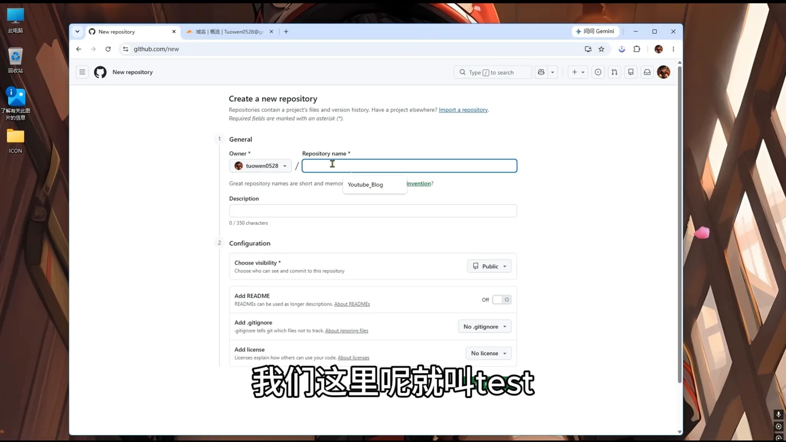
示例名称仅用于测试，请根据自己的网站命名。 -
创建仓库
检查名称和可见性后，点击页面底部的 Create repository。 GitHub 创建完成后会自动进入新仓库首页。
把网站文件上传到仓库
-
打开上传入口
在仓库首页点击 Add file， 再选择 Upload files。
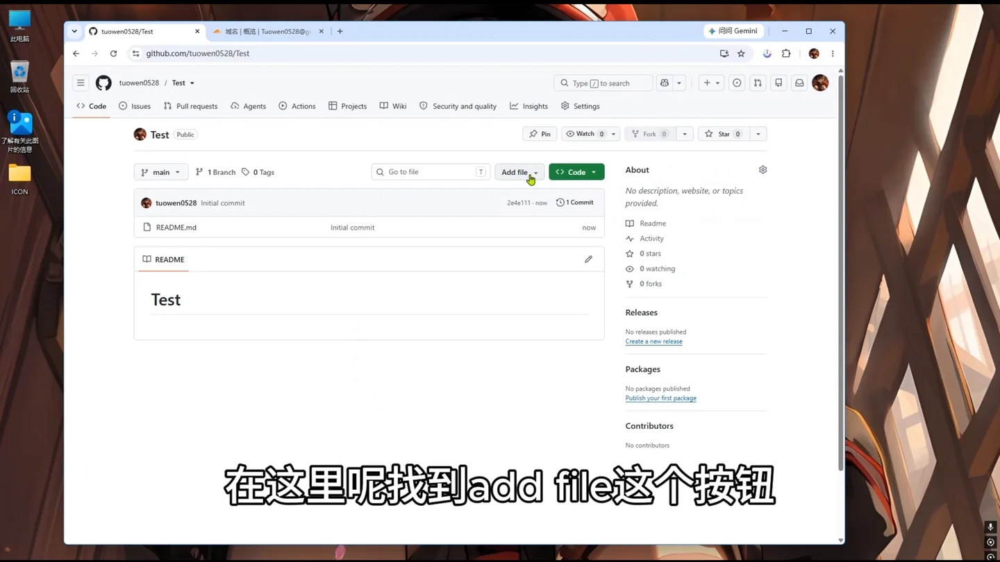
Upload files 可以通过浏览器直接上传网站成品。 -
选中网站中的全部内容
回到资源管理器，进入网站文件夹内部，选中
index.html和它依赖的其他文件、文件夹。 重点是上传文件夹里面的内容，而不是再套一层网站文件夹。 -
拖入 GitHub 上传区域
把选中的内容拖到页面中央写有 Drag additional files here 的区域。 等待所有文件出现在上传列表中，不要在仍然上传时关闭页面。
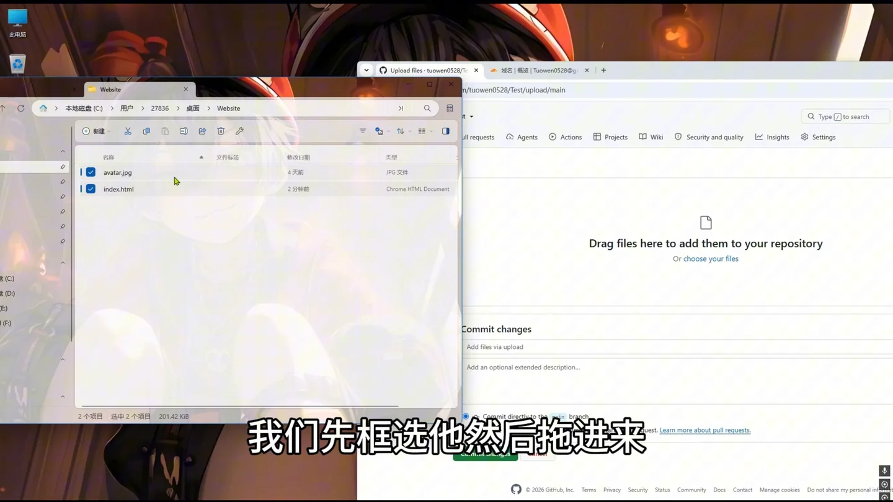
目录结构会影响 CSS、JavaScript 和图片路径，上传时不要随意改变。 -
提交这次上传
文件上传完成后，滚动到页面下方。提交说明可以保留 GitHub 默认文字， 也可以写成
Upload website files。 点击绿色的 Commit changes。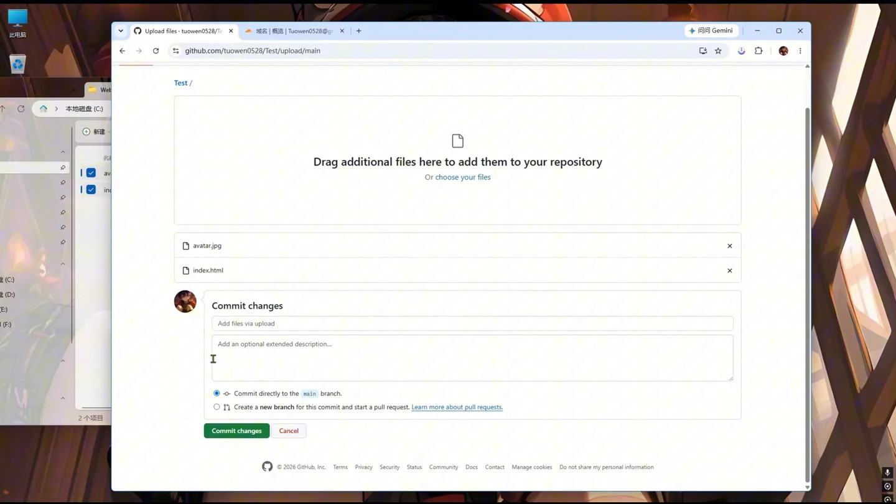
Commit changes 会把本次上传正式保存到仓库。
启用 GitHub Pages
-
进入仓库设置
上传完成后，点击仓库顶部的 Settings。 如果窗口较窄没有直接显示 Settings，可以先打开顶部的更多菜单。
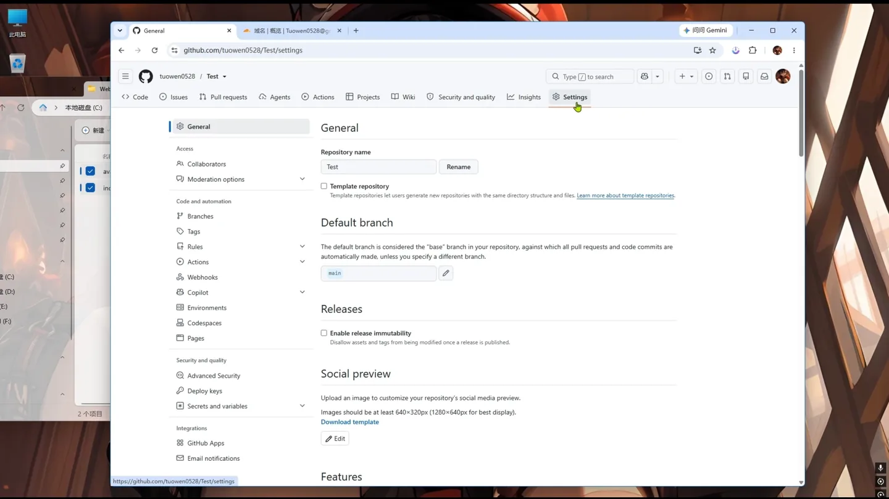
需要对仓库拥有管理员权限，才能修改 Pages 设置。 -
在左侧找到 Pages
在设置页左侧的 Code and automation 分组中点击 Pages。
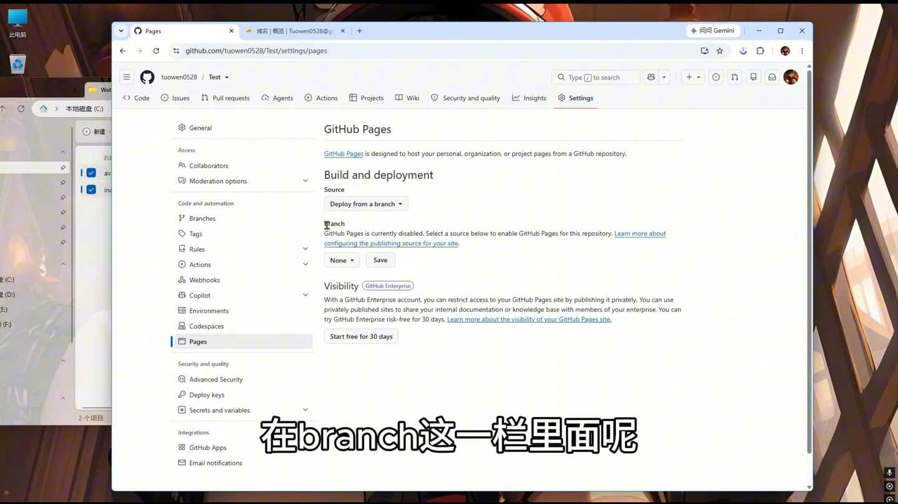
视频使用从分支直接部署的方式，不需要配置服务器。 -
选择发布分支
在 Build and deployment 下确认 Source 为 Deploy from a branch。 在 Branch 一栏点击当前的 None，改选 main。
旁边的目录保持
/(root)，因为index.html就放在仓库根目录。最后点击 Save。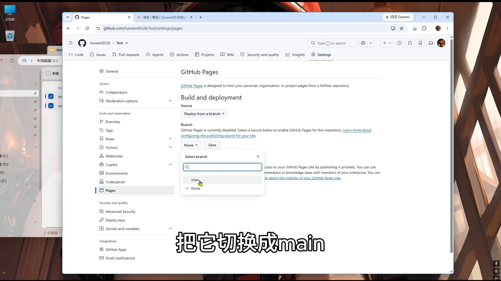
main 和 /(root) 表示发布 main 分支根目录中的网站文件。 -
等待 GitHub 完成部署
保存后等待几十秒，再刷新 Pages 设置页。视频中很快就出现了网站已发布的提示； 实际时间会受 GitHub 构建队列影响，官方说明更新有时可能需要几分钟。
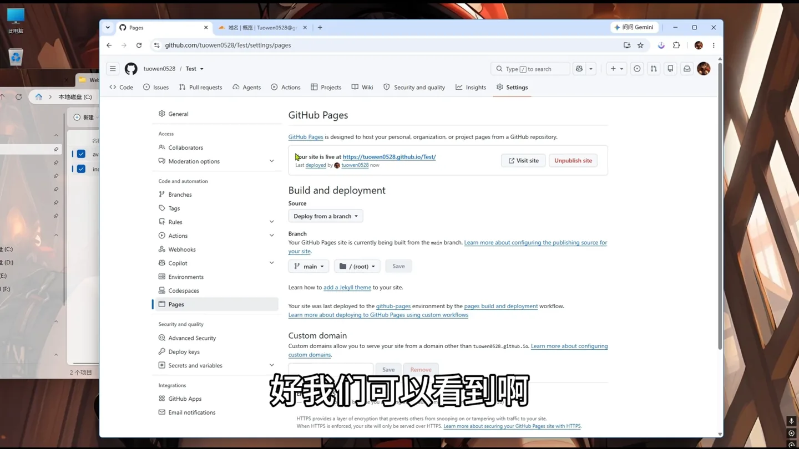
出现公开地址和 Visit site 后，默认 Pages 网站已经可访问。
访问 GitHub 提供的默认网址
-
点击 Visit site
在 Pages 设置页点击 Visit site， 浏览器会打开 GitHub 自动生成的公开地址。
-
检查页面和链接
确认首页样式、图片和按钮都能正常显示。项目站点的默认地址通常类似下面的形式， 其中用户名和仓库名要换成自己的值：
https://your-username.github.io/your-repository/如果页面显示 404，先确认发布分支、目录和
index.html的位置， 再等待一段时间后刷新。
在 GitHub Pages 中填写自己的域名
-
回到 Pages 设置页
默认地址确认可用后，回到仓库 Settings → Pages，向下找到 Custom domain。
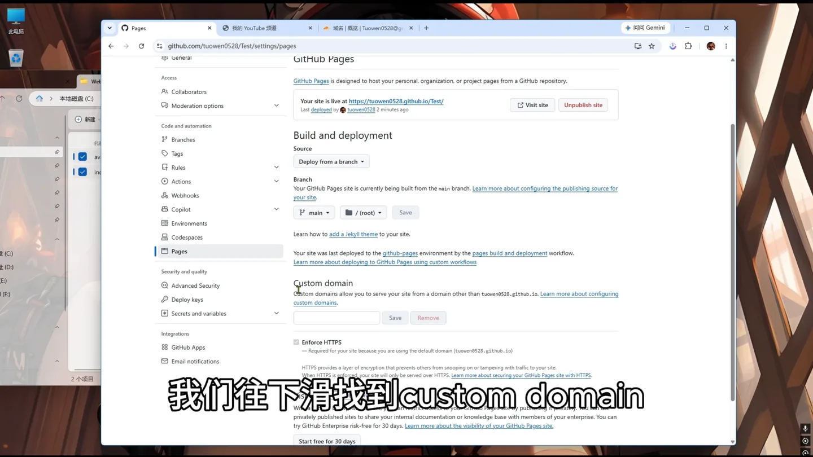
先在 GitHub 中添加域名，再去 DNS 服务商创建记录。 -
确定要使用的完整子域名
视频中的域名已经托管在 Cloudflare，并使用
test作为子域名。 例如你的主域名是example.com，可以填写：test.example.com这里必须填写完整域名，不是只填
test。 你也可以改用blog.example.com或其他尚未占用的子域名。 -
点击 Save
输入完成后点击 Save。 GitHub 会保存自定义域名，并开始检查它的 DNS 是否正确指向 Pages。 从分支部署时，GitHub 通常还会在发布分支根目录创建或更新
CNAME文件，不要在后续上传时误删它。
在 Cloudflare 添加 CNAME 记录
-
打开对应域名的 DNS 记录
登录 Cloudflare 控制台 ，选择刚才使用的主域名。 在左侧进入 DNS → Records，然后点击 Add record。
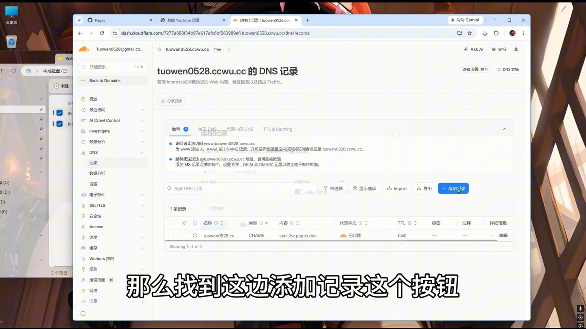
确保打开的是刚才填入 GitHub Pages 的那个主域名。 -
把记录类型改为 CNAME
在新增记录窗口中，把 Type 选择为 CNAME。
-
填写子域名名称
在 Name 中只填写子域名前缀。 如果 GitHub 中填写的是
test.example.com， 这里就填写test；如果使用blog.example.com，这里填写blog。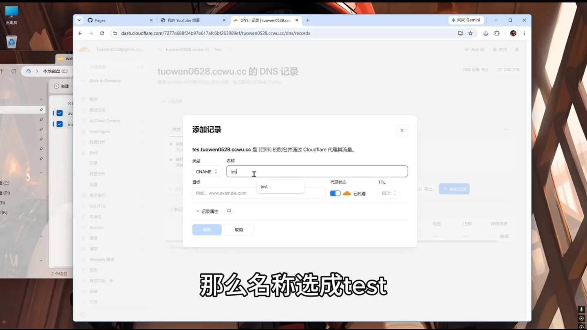
视频示例的 Name 为 test，读者应填写自己选定的子域名。 -
填写 GitHub Pages 默认域名
在 Target 或 Content 中填写 GitHub Pages 的账户域名， 格式如下：
your-username.github.io只填写域名，不要加
https://，不要带路径， 也不要把项目仓库名附在后面。视频从 GitHub Pages 地址中复制这部分内容。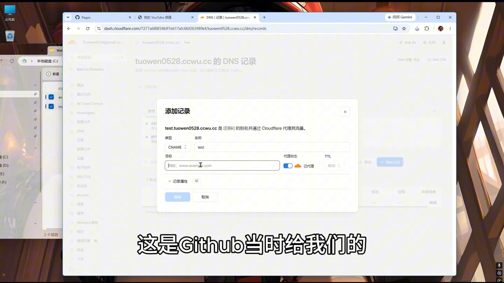
目标值应是你自己的 GitHub 用户名加 .github.io。 -
保存 DNS 记录
点击 Save 保存。 视频中 Cloudflare 的代理开关处于开启状态；如果 GitHub 长时间无法验证、 HTTPS 证书签发失败或访问异常，可以先把记录切换为 DNS only，待 GitHub 检查和 HTTPS 正常后再决定是否启用代理。
等待 GitHub 完成 DNS 检查
-
回到 GitHub Pages 并刷新
返回仓库的 Pages 设置页并刷新。刚添加记录时，页面可能显示 DNS check in progress 或检查失败。 这通常是 DNS 记录还没有传播完成，不要立即重复创建相同记录。
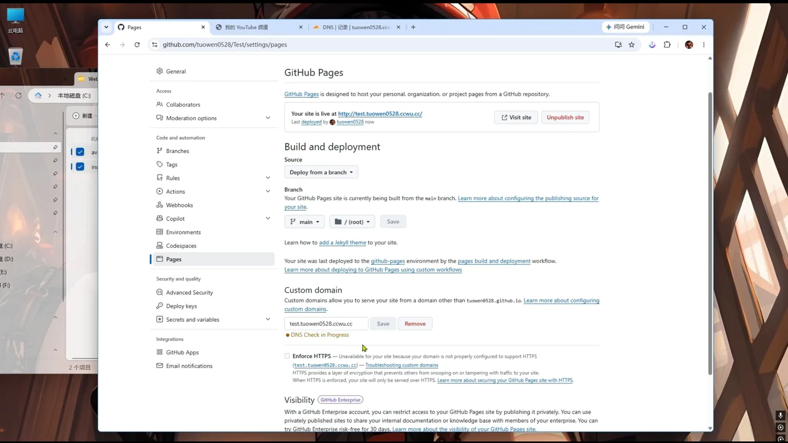
视频第一次刷新时检查尚未完成。 -
稍等后再次刷新
视频等待片刻后再次刷新，页面出现绿色状态和 DNS check successful， 说明 GitHub 已确认自定义域名指向正确。
DNS 生效时间并不固定，可能是几分钟，也可能更久。 GitHub 官方提示 DNS 变更最长可能需要 24 小时传播。
绿色成功状态出现后，再测试自定义域名访问。 -
可用后启用 HTTPS
如果页面出现 Enforce HTTPS， 建议勾选，使访问自动使用加密连接。新域名的证书可能不会立刻可用， 等待签发完成后再开启即可。
用自己的域名测试网站
-
点击 Visit site
DNS 检查成功后，点击 Pages 页面中的 Visit site， 或直接在浏览器地址栏输入刚才绑定的完整域名。
浏览器地址栏应显示自己的域名，而不是 github.io 默认地址。 -
测试页面中的交互
视频继续点击了页面中的 YouTube 按钮，确认能正常跳转到频道首页。 你也应逐项检查导航、图片、下载链接和外部链接，尤其要留意文件名大小写。 GitHub Pages 的路径区分大小写，本地 Windows 中能打开的错误路径，上线后可能变成 404。
网站修改后怎样更新
-
先在本地修改文件
视频以
index.html为例，在代码编辑器中修改首页文字并保存。 修改后最好先在本地浏览器刷新检查，确认没有破坏 HTML 结构或资源路径。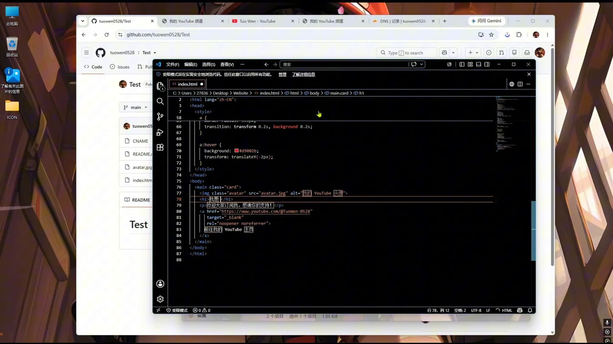
视频通过修改首页文字演示网站更新。 -
回到仓库重新上传有变化的文件
打开仓库首页，点击 Add file → Upload files。 把保存后的
index.html拖入上传区域。GitHub 会识别仓库中已有同名文件，并用新版本更新它。 如果本次还修改了 CSS、JavaScript 或图片，也要把这些变化一起上传。
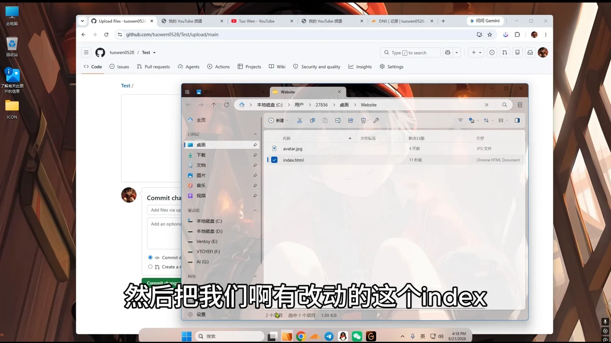
只上传有变化的文件即可，但不要遗漏它依赖的新资源。 -
再次 Commit changes
等待上传完成，填写本次更新说明，例如
Update homepage text，然后点击 Commit changes。 提交后 GitHub Pages 会自动重新部署。 -
等待部署并强制刷新
等待片刻后回到网站刷新。若页面仍是旧内容，可以使用 Ctrl + F5 强制刷新，或打开无痕窗口排除浏览器缓存。
新文字出现，说明更新已经部署成功。
常见问题和故障排查
打开网站显示 404
- 确认仓库根目录中存在名称完全正确的
index.html。 - 确认 Pages 的 Source 是 Deploy from a branch。
- 确认发布分支是
main，目录是/(root)。 - 检查仓库的 Actions 页面，确认 Pages 部署任务没有失败。
- 刚启用 Pages 时先等待几分钟，不要连续删除并重建配置。
页面能打开，但没有样式或图片
- 确认 CSS、JavaScript 和图片文件已经一起上传。
- 检查 HTML 中的路径与仓库目录结构是否一致。
- 检查文件名大小写，例如
Logo.png与logo.png是不同路径。 - 不要在网页中引用电脑上的
C:\或G:\本地路径。 - 项目站点使用绝对路径时要特别小心，优先使用与页面结构匹配的相对路径。
自定义域名一直检查失败
- GitHub Pages 中要填写完整域名，例如
blog.example.com。 - Cloudflare 的 Name 只填子域名前缀，例如
blog。 - CNAME Target 应为
your-username.github.io，不要添加协议和仓库路径。 - 删除同一名称下冲突的 A、AAAA 或其他 CNAME 记录。
- 在 Cloudflare 中暂时改为 DNS only，再等待 GitHub 完成验证。
- DNS 可能需要较长时间传播，官方提示最长可能达到 24 小时。
提交更新后页面仍然没变化
- 确认更新已经出现在仓库的
main分支。 - 等待 Pages 部署任务完成后再刷新网站。
- 使用 Ctrl + F5，或清除浏览器缓存。
- 如果启用了 Cloudflare 代理，也可能需要清除 Cloudflare 缓存。
官方资料与相关链接
- GitHub Docs：Creating a GitHub Pages site
- GitHub Docs：Configuring a publishing source
- GitHub Docs：Managing a custom domain
- GitHub Docs：自定义域名故障排查
- Cloudflare Docs：管理 DNS 记录
GitHub 与 Cloudflare 的界面名称可能随更新略有变化。若页面与视频不完全一致， 以官方文档和当前控制台显示为准。使用域名及网络服务时，请遵守所在地法律法规和服务条款。